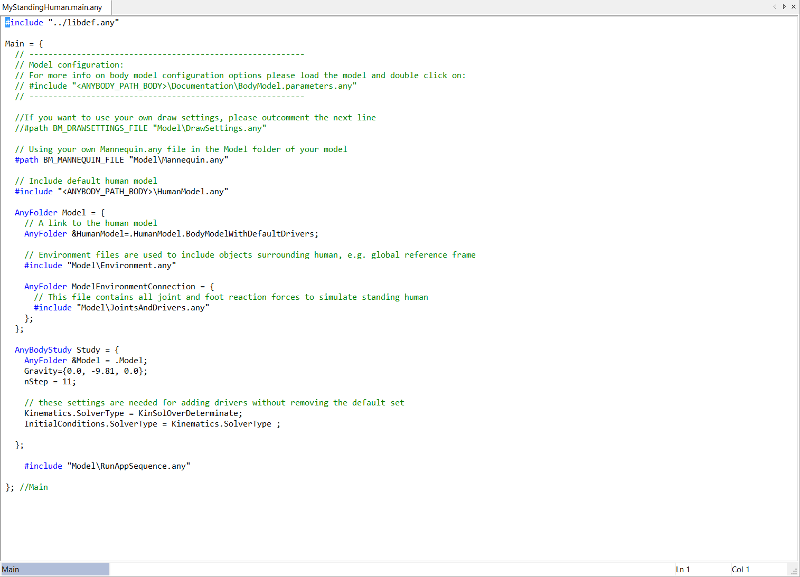

Lesson 1: Creating a Standing Model¶
The model repository contains many applications in the Examples folder. A few of these are generic in nature and can serve dual purposes: Either they can be used as they are or they can be modified and become models of something else. In this lesson, we will load the Standing Model as it is and introduce the available options.
The standing model can be found in the repository under Applications/Examples. The model comprises most of the available body parts in the library. The main file is called StandingModel.Main.any and this is the one you must load to see the model.
You can open the file with the File->Open menu in AnyBody or through Windows Explorer.
The standing model has a few predefined features and some that you can modify. Here is a short list:
- The model is supported by having both feet always connected to the ground, even when the feet move.
- The posture of the model is controlled via anatomical angles for all major joints except the ankles. The model has a place where these joint angles can be specified directly. We shall return to this topic shortly.
- The model automatically balances its posture by means of the ankle angles such that its collective center of mass remains vertically above the ankle joints. For instance, if the model extends the arms, the entire model will move slightly backward to maintain the balance.
- The model has a set of predefined points to which three-dimensional external forces can be applied; they are defined as spatial vectors. When doing so, the muscles of the model will be recruited to balance the external forces.
Open model template¶
In this chapter, we will show you how to create a new standing model
using templates. You do this by pressing the Create Model button  in the editor window toolbar or the create model button in the
mainframe toolbar:
in the editor window toolbar or the create model button in the
mainframe toolbar:

The Template dialogue opens and displays a list of pre-defined templates supported in the AnyBody Managed Model Repository (AMMR). Choose the ‘Human Standing’ template and select the folder you want to save your new Human Standing model in. To demonstrate, let us create a ‘MyModels’ folder in the ‘AMMR\Application\’ folder and set it as the target folder. Save the model as ‘MyStandingHuman’. Press the OK button on completion.

Your new ‘MyStandingHuman.main.any’ file opens in the script Editor. The location of the file is shown in the title bar:

Load model¶
To see the graphical representation of the model, you need to load.
Load/reload is a frequent operation and has been assigned to function
key F7. You may also load your model by clicking  .
.
Display the model¶
After loading is completed, the Model View window opens and shows the standing model: (You can open it manually from View -> Model Views).

The icons in the toolbar at the top of the Model View window allow you to modify the image: zoom, pan, rotate, etc. They should be mostly self-explanatory. Now is a good time to play a bit around with them and to familiarize yourself with the options.
In practical use it is often necessary to change quickly between these functions, so keyboard shortcuts have been provided:
- The Ctrl button activates the Pan function.
- The Shift button activates the Zoom function.
- The Ctrl-Shift combination activates the rotation function.
- If you have a scrolling wheel on your mouse, this will zoom the model in and out.
See also
You can now proceed to Lesson 2: Controlling the Posture.